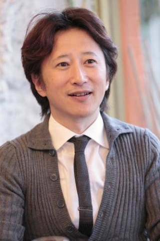

荒木飛呂彥生於1960年6月7日，日本漫畫家，本名荒木利之。宮城縣仙台市若林區出身。東北學院榴岡高等學校畢業、宮城教育大學中退、仙台設計専門學校畢業。身高169.5厘米，體重（截至2007年）61公斤，血型B型。已婚，育有兩個女兒。
其代表作品《JoJo的奇妙冒險》1987年開始在《週刊少年Jump》連載，以獨特的畫風和分鏡著稱，劇情方面以「歌頌人類」為探討主題。他曾經獲得過日本漫畫界的手塚獎。
荒木老師一直以來都很年輕，左上角為50歲時的照片，他本人回應保持年輕的方法就是用東京的自來水洗臉，但有人懷疑根本就是帶過石像鬼面具的吸血鬼!